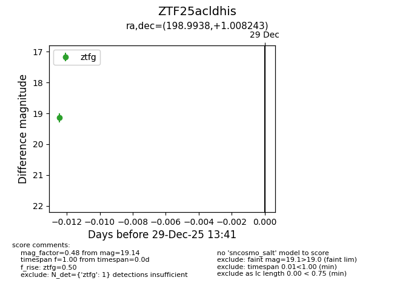
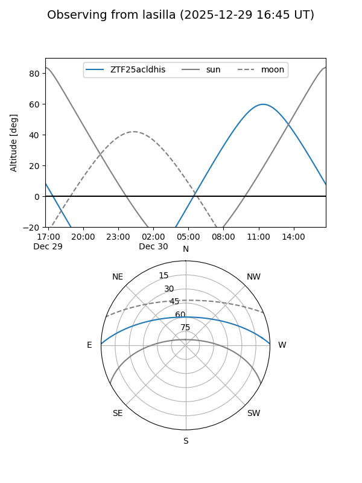
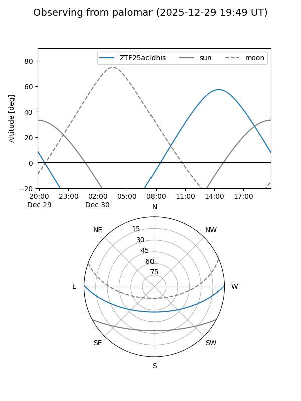

ZTF25acldhis
Target ZTF25acldhis at 2025-12-29 13:43
Aliases and brokers:
FINK: fink-portal.org/ZTF25acldhis
Lasair: lasair-ztf.lsst.ac.uk/objects/ZTF25acldhis
ALeRCE: alerce.online/object/ZTF25acldhis
alt names
ZTF25acldhis (ztf,fink_ztf)
Coordinates:
equatorial (ra, dec) = 198.9938,+1.00824
equatorial (HMS+DMS) = 13:15:58.51,+01:00:29.67
galactic (l, b) = (316.6514,+63.22452)
Flags:
Photometry:
last ztfg=19.14
1 ztfg detections
Lightcurve

Visibility


Additional plots